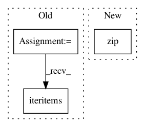

b7cfb4b33525cf3b41b7142521db253feed12269,autoencoder/testing/visualize.py,,plot_info_retrieval,#Any#Any#,268
Before Change
new_x = interpolate.interp1d(ticks, range(len(ticks)))(ticks)
i = 0
for model_name, val in precisions.iteritems():
fr, pr = zip(*val)
plt.plot(new_x, pr, linestyle="-", alpha=0.6, marker=markers[i],
markersize=6, label=model_name)
After Change
def plot_info_retrieval(precisions, save_file):
// markers = ["|", "D", "8", "v", "^", ">", "h", "H", "s", "*", "p", "d", "<"]
markers = ["D", "p", "*", "s", "d", "8", "^", "H", "v", ">", "<", "h", "|"]
ticks = zip(*zip(*precisions)[1][0])[0]
plt.xticks(range(len(ticks)), ticks)
new_x = interpolate.interp1d(ticks, range(len(ticks)))(ticks)
In pattern: SUPERPATTERN
Frequency: 3
Non-data size: 3
Instances
Project Name: hugochan/KATE
Commit Name: b7cfb4b33525cf3b41b7142521db253feed12269
Time: 2017-03-29
Author: hugochan2013@gmail.com
File Name: autoencoder/testing/visualize.py
Class Name:
Method Name: plot_info_retrieval
Project Name: hugochan/KATE
Commit Name: b7cfb4b33525cf3b41b7142521db253feed12269
Time: 2017-03-29
Author: hugochan2013@gmail.com
File Name: autoencoder/testing/visualize.py
Class Name:
Method Name: plot_info_retrieval_by_length
Project Name: pymc-devs/pymc3
Commit Name: 037d251a2289223c0dbae881a3a6ce2fe7c94d98
Time: 2013-04-07
Author: jsalvatier@gmail.com
File Name: pymc/trace.py
Class Name: NpTrace
Method Name: __add__